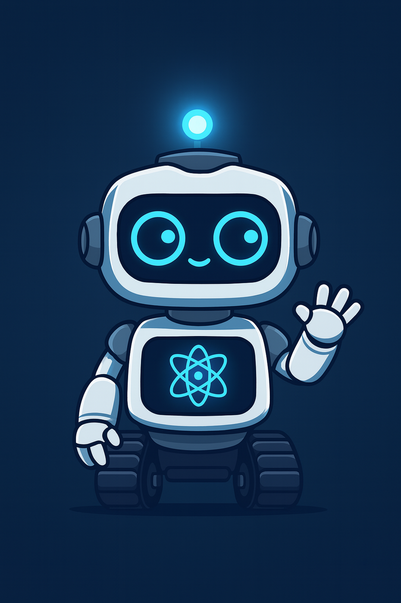

Gamma SOC Assistant
Agente de IA para Malware & SIEM
Listo para recibir tu pregunta.
Envía tu Pregunta
Formula tus dudas sobre familias de malware o hashes a consultar en el SIEM.
Respuesta de n8n
La IA consulta el guardrail, el RAG y, si aplica, el SIEM para construir esta respuesta.
Esperando respuesta...